0What you need
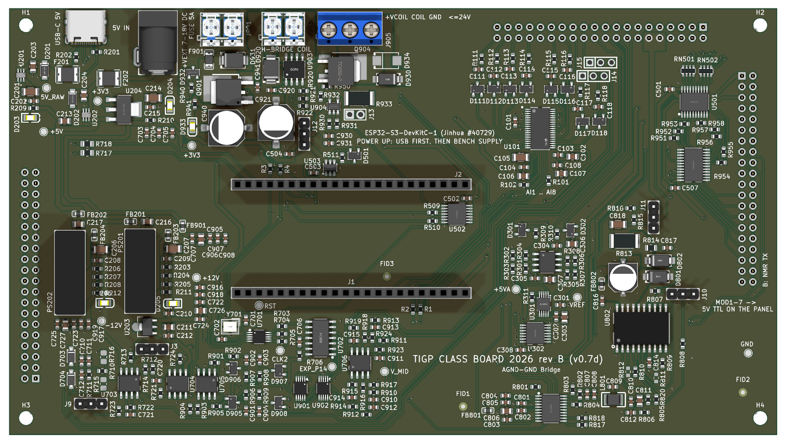
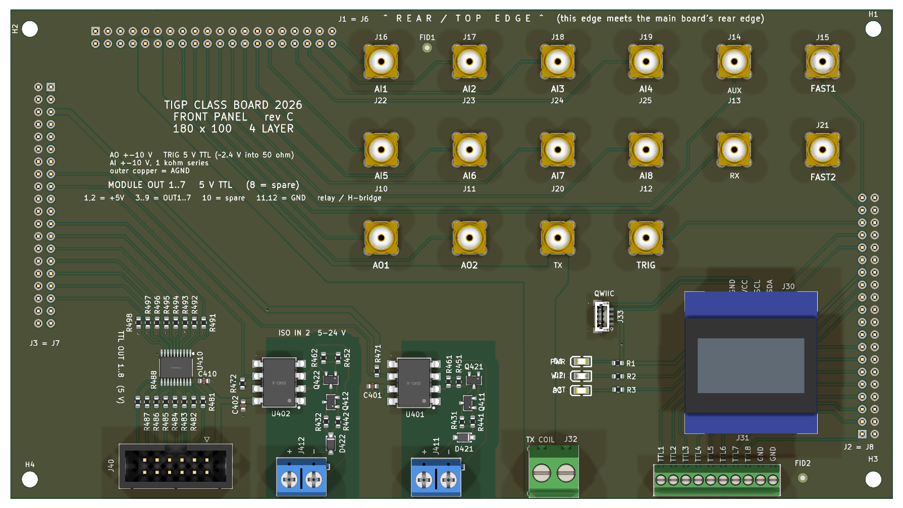
Your kit, one per board: the main board (class board v0.7, 180 × 100 mm, "rev B" on the silkscreen), the front panel (same size, "rev C"), the ESP32-S3 dev board (Jinhua #40729), and connectors from the class stock:
| Part | Where it goes | Per board |
|---|---|---|
| 1×22 female socket, 8.5 mm body | main board J1, J2 (the dev board plugs in here) | 2 |
| 2×20 female socket, 8.5 mm body (Jinhua 10108) | main board J6, J7, J8, on the back of the board | 3 |
| 2×20 male header, cut from a 2×40 strip (41522) | panel J1, J2, J3, on the panel's inner face | 3 |
| 1×3 male header, cut from a 1×40 strip (41504) | main board J3, J9, J10, J11, J12, J14, J15, only if the factory left them empty | up to 7 |
| 2.54 mm jumper shunt (15293) | on the seven 1×3 headers | 7 |
| 1×4 female socket (33637) | panel J30, the OLED socket, only if J30 is empty or carries a male header | 1 |
| 2×6 male header, cut from a 2×40 strip | panel J40, only if the factory left it empty | 1 |
| M3 × 11 mm stand-off, female–female, with 2 × M3 × 6 screws | between the two boards, four corners (lab stock) | 4 + 8 |
| M2 × 10 mm stand-off with PM2 × 5 screws (22500, 22578) | the OLED module, when it arrives | 4 + 8 |
The OLED modules are not in stock yet. The board works without one: the class firmware does not drive it, and J30 is a socket, so the module plugs in later without soldering.
Tools: a temperature-controlled soldering iron with a small chisel or conical tip, 0.5–0.8 mm solder (the boards are lead-free HASL; leaded or lead-free solder both wet it), flux, flush cutters, masking tape, a multimeter, a magnifier or a phone camera, and a USB-C data cable. Desoldering wick or a pump only if a wrong part has to come off. Solder in a ventilated place and wash your hands afterwards.
Orientation words used on this page
- Rear edgeThe main board's edge with the USB-C socket, the 5 V jack and the three screw terminals. The panel's rear edge meets it.
- Component sideThe main board's side with the surface-mount parts; it faces the dev board.
- BackThe main board's plain side; the front panel sits on it.
- Outer face / inner faceThe panel's outer face carries the SMA jacks and is the face of the instrument; the inner face looks at the main board.
- Pin 1The square pad of every header footprint. The 1×3 headers carry no position labels on the silkscreen, so count from the square pad.
1Inspect the boards
- Main board, component side: find J1 and J2, two rows of 22 holes, 25.4 mm apart, under the silkscreen "ESP32-S3-DevKitC-1". They should be empty. Find the seven 1×3 positions J3, J9, J10, J11, J12, J14, J15: note whether the factory fitted a header on them. J13 (1×2, near the centre) stays empty whatever you find.
- Main board, back: J6 along the rear edge (right half), J7 along the right edge, J8 along the left edge, each a 2×20 field of holes. They should be empty.
- Panel, inner face: J1 along the rear edge, J2 and J3 along the two side edges, 2×20 each. Empty.
- Panel, outer face: J30, four holes in a row next to the four M2 holes of the OLED, silkscreen GND VCC SCL SDA. Empty, or a male header, which is wrong and comes off in step 6. J40, the 2×6 module header: the factory preview showed a shrouded header fitted; if it is there, leave it.
- Meter on ohms, from the main board's ground (the shell of the USB-C socket, or test point TP2) to +5V_RAW (TP4), +3V3 (TP3), +12 V (TP203), −12 V (TP204) and +5VA (TP205): none below about 1 kΩ. A reading near zero is a short from the factory; stop and show the instructor.
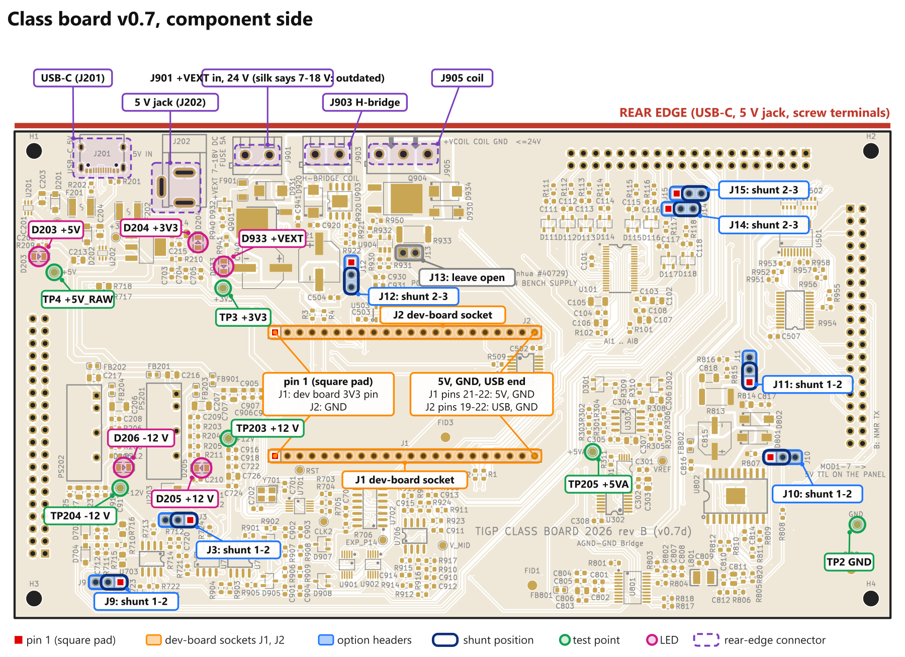
2Cut and mark the headers
- From a 2×40 male strip cut three 2×20 pieces per panel (one strip gives two). Cut between pins with the flush cutters, square to the strip; file nothing. The strip has a short side (about 3 mm) and a long side (about 6 mm): the short side goes into the panel, the long side into the socket.
- If J40 was empty: cut a 2×6 piece from a spare half. It has no key, so mark its pin-1 corner with a paint dot or a scratch now.
- If the 1×3 positions were empty: cut seven 1×3 pieces from a 1×40 male strip.
3Main board: the dev-board sockets J1 and J2
Two 1×22 female sockets, one in each row of 22 holes, 25.4 mm apart. Counting from the square pad, J1 holes 1 and 2 are the dev board's 3V3 pins, hole 21 its 5 V input and hole 22 ground; J2 hole 1 is ground and hole 2 the serial TX line.
How to solder them straight. Plug both sockets onto the dev board's pins first, so the dev board holds them at the right spacing. Check the orientation: the dev board's two 3V3 pins (printed on the dev board) sit at the square-pad end of J1, its 5V pin at hole 21, and its two USB-C sockets point away from the square pads. Push the socket tails into the holes, turn the board over, tape the dev board down, solder one pin at each end of each socket, look that both sockets stand square, then solder the rest. Unplug the dev board.
Each joint is a small shiny cone; a dull blob or a bridge to the neighbouring pad is reworked with the iron and a little flux.
Tails on the back. The J1 and J2 tails come through on the back, inside the 11 mm gap that the panel will cover. The optional rework wires of step 9 (A2 and B6) are soldered to those tails, before the panel goes on.
4Panel: the three link headers J1, J2, J3
- Push a 2×20 piece into panel J1 from the inner face, short side into the board, so the plastic body sits on the inner face and the long pins stand up from it. The pin-1 square pad takes any pin; the header has no polarity, the board does.
- Tape it, turn the panel over, solder the two corner pins on the outer face, check that the body sits flat and square, then solder the other 38. The joints land among the SMA jacks; they are 9.8 mm tall, keep the iron clear of them.
- The same for J2 and J3 along the side edges.
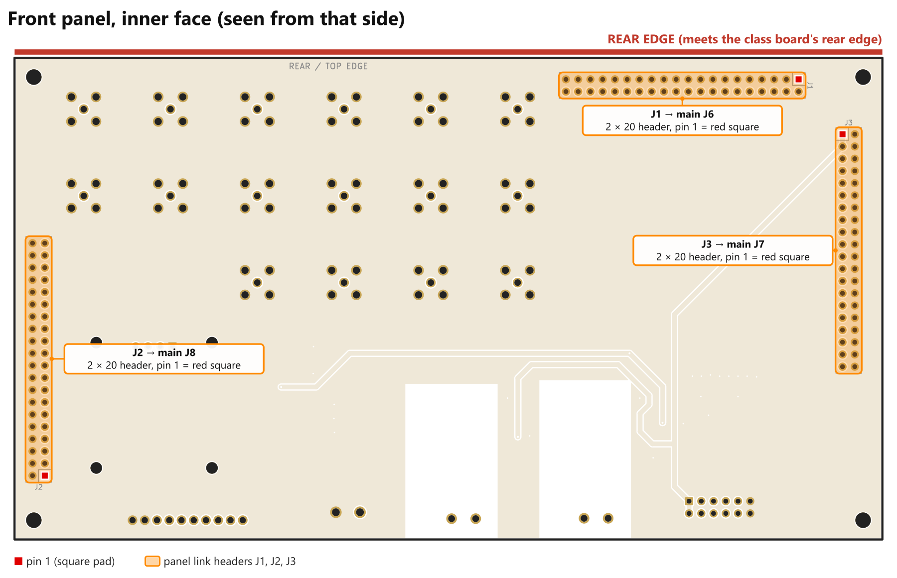
5Main board: the three link sockets J6, J7, J8, soldered while mated
The three 2×20 sockets must line up with the three panel headers to within a fraction of a millimetre, so solder them plugged onto the panel:
- Push a socket onto each of the panel's three headers, all the way down onto the header body.
- Lay the main board back down onto the three socket tails. The panel and the main board meet rear edge to rear edge; the panel's silkscreen says "REAR / TOP EDGE ... meets the main board's rear edge". Only this way do the three fields line up: main J6 on panel J1, J7 on J3, J8 on J2, pin for pin.
- Fit the four M3 × 11 stand-offs between the boards with a screw from each side, finger-tight, so the boards are parallel and the sockets sit flat against the main board's back.
- Solder the 120 pins on the main board's component side. They sit among small parts; use the fine tip and work from the outside in. Look at every row with the magnifier: no bridges between the two rows, which are 2.54 mm apart.
- Take the screws out and pull the boards apart, straight and evenly, a little at each corner. They come apart again whenever a jumper or the dev board needs reaching.
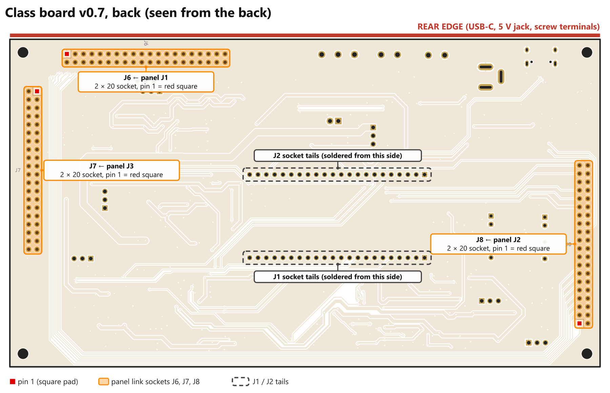
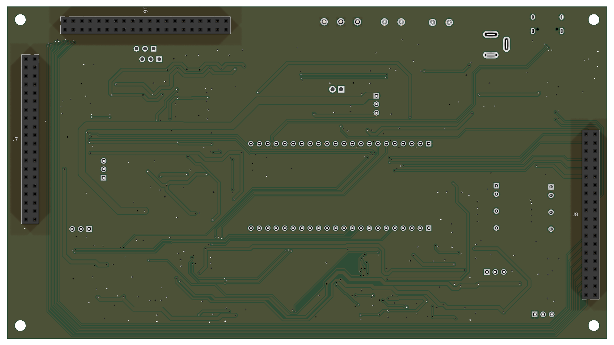
6Panel: J30 and J40
- J30 empty: push the 1×4 female socket in from the outer face, body on the outer face, and solder the four tails on the inner face. Pin 1 (square pad) is GND.
- J30 with a male header: the OLED module's own pins cannot plug into it. Cut the plastic strip away from the four pins with the flush cutters, pull each pin out with the iron on its joint, clear the four holes with wick, then fit the female socket as above. Ask the tutor for help the first time.
- J40 empty: push the marked 2×6 piece in from the outer face. Pin 1, the marked corner, goes on the square pad: it is at the right-hand end of the row nearer the board's centre. Solder on the inner face. Pins 1 and 2 carry +5 V, 11 and 12 ground; a cable plugged in backwards puts 5 V on a module's ground, so the mark matters.
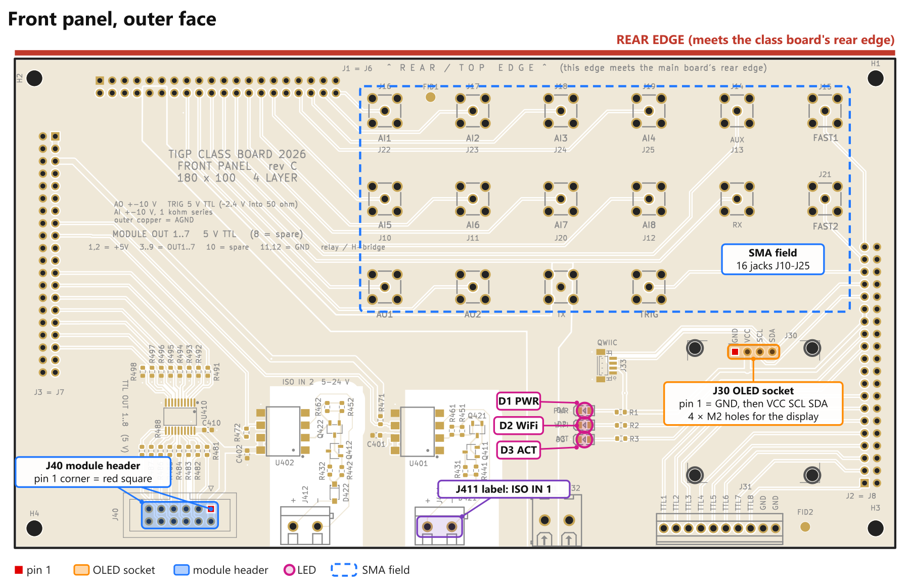
7Main board: option headers, shunts and labels
- If the seven 1×3 positions were empty, solder a 1×3 piece on each from the component side, pin 1 on the square pad.
- Fit the shunts. Each 1×3 header is a selector and every one carries a shunt; an open header leaves a stage without feedback or a driver without supply. Positions for the NMR console, counted from the square pad:
| Header | Shunt | What it selects |
|---|---|---|
| J3 | 1-2 | receiver stage 1 gain 101 (2-3: gain 11) |
| J9 | 1-2 | receiver stage 2 gain 10 |
| J10 | 1-2 | transmitter gain 25 (open: follower, for a first test) |
| J11 | 1-2 | transmitter output direct (2-3: through the 20 dB pad) |
| J12 | 2-3 | polarizer gate driver fed from 5 V. 1-2 feeds it from the bench supply and is allowed only below 18 V; the course runs 24 V |
| J14 | 2-3 | ADC channel 7 = receiver I (1-2: panel input AI7) |
| J15 | 2-3 | ADC channel 8 = receiver Q (1-2: panel input AI8) |
- Three labels, because the silkscreen misleads: on J905 (the 3-way terminal at the rear) "1 +VCOIL · 2 COIL · 3 GND" with pin 1 marked, the printed legend is in reverse order; on J901 (the 24 V input) "+" at pin 1, the square pad, no polarity is printed; on the panel's J411 "ISO IN 1". A strip of masking tape and a fine pen are enough.
8First power-up
One 5 V source at a time: the USB-C socket on the main board or the 5 V jack, never both.
USB first, then the bench supply, off in the reverse order. The transmitter amplifier is damaged if its 24 V arrives before the 3.3 V logic.
- Without the dev board. Plug a USB-C cable from a laptop or a 5 V / 2 A supply into the main board's USB-C socket at the rear edge. Four LEDs by the rear edge light: D203 (+5 V), D204 (+3V3), D205 (+12 V), D206 (−12 V). With the meter against ground:
A dark LED or a rail out of range: unplug and show the instructor. After a few minutes nothing on the board should be too hot to touch; the 3.3 V regulator runs warm, that is normal.
Test point Rail Expected TP3 +3V3 3.30 V (3.24 to 3.36) TP203 +12 V within 1.2 V of +12 TP204 −12 V within 1.2 V of −12 TP205 +5VA 5.00 V (4.85 to 5.15) - Unplug. Dev board in. Orientation as in step 3: 3V3 pins at the square-pad end of J1, USB sockets away from it. Press it fully home.
- Plug the USB-C into the main board again. The dev board's RGB LED comes on. A fresh dev board has nothing useful on it yet; a board flashed in Workshop 1 starts the simulator build and shows blue (its own WiFi network).
- Flash the real build. In VS Code, open the class repository's
firmwarefolder in the PlatformIO terminal, one command per line:
The first command writes the firmware, the second the web app. A dev board that has never been flashed ignores the upload until you hold BOOT, tap RST and release BOOT; it then comes back on a new COM port, and the upload works to that port (pio run -e esp32s3 -t upload pio run -e esp32s3 -t uploadfs--upload-port COMxif PlatformIO picks the wrong one). This is needed once. BOOT and RST are the two small buttons on the dev board, reachable while the panel is off. - Watch it boot. The serial monitor in PlatformIO shows
[boot], then one[registry] <name> readyline per block, then[wifi] AP instrument-XXXXor[wifi] STA <ip>and[http] server started. With no WiFi credentials in your git-ignoredsecrets.hthe board opens its own networkinstrument-XXXX(passwordinstrument); join it and open 192.168.4.1. The RGB LED: yellow while joining, green on your network, blue on its own. - Unplug the USB before the next step.
9Fixes to the ordered board (each one optional)
The ordered board has a few known weaknesses, and each has a small fix you can make on your own board with a wire, a resistor or a part swap. Every item is optional: the firmware runs on an unmodified board and detects, or is told, what is fitted. A1, A2 and B6 improve every board that runs the NMR console and are worth doing; B1 to B7 serve particular uses, so read the last column and decide. All of them touch the component side or the J1 tails on the back, so they go on now, after step 3 and before the panel covers the tails in step 10. Pad names are on the map below; the full reasoning is in the rework plan of 8 October in the course repository.
| # | Optional rework | Exactly where | Parts | What it gives |
|---|---|---|---|---|
| A1 | Phase reference: the clock generator's CLK2 into analog input AI1 | TP701 (CLK2 through R705) → an SMA pigtail into the panel's AI1 jack, or a wire to the AI1 net at the R111 pad on the link side | 1 pigtail or 1 wire | Every scan carries its own phase reference, so scans average instead of cancelling. Firmware setting ref_ch 1. Check: a scope on AI1 during a scan shows a 0–3.3 V square wave at the IF. |
| A2 | Transmitter flags to GPIO | The empty pads R811 (IFLAG) and R812 (TFLAG), the pad on the U802 side → 1 kΩ → the J1 tails at pin 6 (GPIO6) and pin 7 (GPIO7), on the back | 2 wires, 2 × 1 kΩ | A current limit or a thermal shutdown of the transmitter amplifier stops the scan set; status reports the flags instead of null. |
| B6 | +VEXT sense | 100 kΩ from +VEXT (the C940 pad, or the J901 side of F901) to the J1 tail at pin 4 (GPIO4); 10 kΩ from there to GND; 100 nF across the 10 kΩ | 2 resistors, 1 capacitor, 1 wire | The firmware reads the bench voltage (about 2 %), refuses to pulse outside 7–24 V and warns before the output clips. |
| B1 | Reverse-current blocking on both 5 V inputs | U201 and U202 (LM66100, SC-70-6): lift pin 3 (CE) from its ground pad and wire it to pin 6 (VOUT) of the same device | fine wire, a microscope | USB-C and the 5 V jack may then be connected together. Check that each source alone still powers the board. Without it: one source at a time. |
| B2 | Pull-down on TRIG_DIR | 10 kΩ from U503 pin 5 (DIR) to GND (U503 pin 2) | 1 × 10 kΩ, 0603 | The TRIG jack is an input from power-up instead of undefined until the firmware runs. |
| B3 | Pull-up on CS_DAC | 10 kΩ from U302 pin 9 to +3V3 (TP3 or TP202), not to U302's own 5 V supply | 1 × 10 kΩ, 1 wire | A guard against the DAC latching stray SPI traffic at boot; the firmware already drives the chip selects high first. Only if an output glitch at boot is ever seen. |
| B4 | AUX jack live | Fit R715 (0 Ω, 0805, an empty footprint) | 1 × 0 Ω | A second receiver input, for a second coil or a test signal into the LNA. |
| B5 | Difference-amplifier gain 20 as designed | R915, R917, R919, R924: 20 kΩ → 40.2 kΩ; C914, C915: 560 pF → 270 pF | 4 resistors, 2 capacitors | 1 V peak at the ADC instead of 0.5 V. Not recommended: setting the ADC range to ±2.56 V does the same. |
| B7 | Separate transmitter supply | Remove FB802; feed the FB802 pad on the C815 side (+VEXT_TX) from an 18–20 V source (a small buck module, or an LM317 from +VEXT) | 1 regulator module (1 A) | The H-bridge runs at the full 24 V while the transmitter amplifier keeps its margin. |
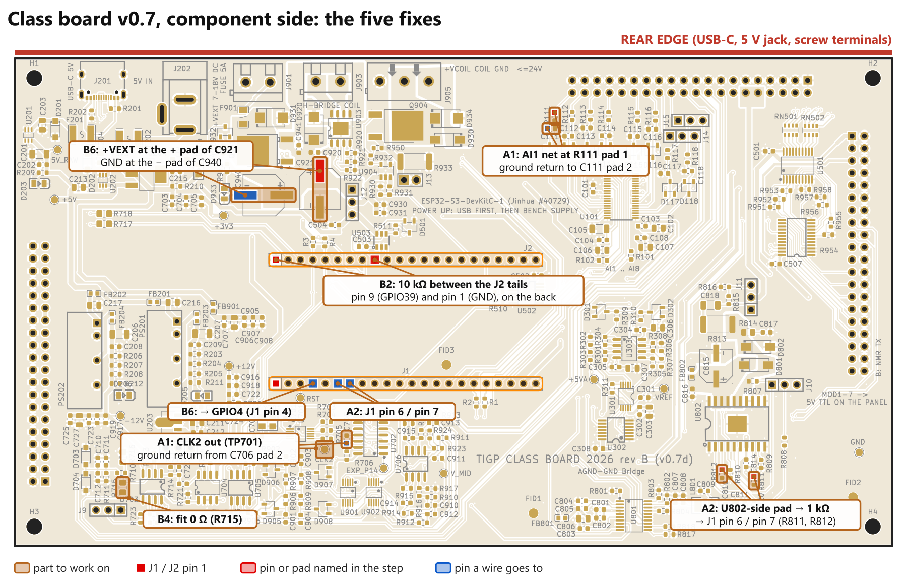
After A1, A2 or B6 the bring-up order is section E of the rework plan: rails, the analog loop-back, the digital lines, the transmitter at 24 V into a dummy load with J10 open first, the receiver, and last the H-bridge and polarizer with the external fuse.
10Plug the two boards together
- USB unplugged. Main board component side down, dev board hanging below. Panel outer face up.
- Rear edge to rear edge, the three headers over the three sockets, press down evenly at the four corners until the socket bodies meet the header bodies: the gap between the boards is 11 mm all round.
- Four M3 × 11 stand-offs in the corner holes, M3 × 6 screws from both sides. Do not use longer screws from the two sides into an 11 mm stand-off: the tips meet.
- USB in. The panel's three LEDs: D1 PWR on; D2 WIFI lit and flickering during boot (it shares a serial line), then under the firmware's control; D3 ACT. Open the app: the A / B / C smoke tests of workbook chapter 4 (a voltage on AI1, a sine from AO1, a TTL line, a module output, an isolated input) show that the panel is connected. One wrong reading on a whole group of signals means a link header mated one pin off: unplug and look.
- The 24 V bench supply on J901 only now, + to the labelled pin, current limit set, over-voltage limit at 25 V. D933 (+VEXT) lights. The coil supply on J905 last, through the in-line fuse. Switch off in the reverse order.
The jumpers, the dev board's buttons and the terminal screws all face down inside the stack: to reach them, open the housing and turn the instrument over.
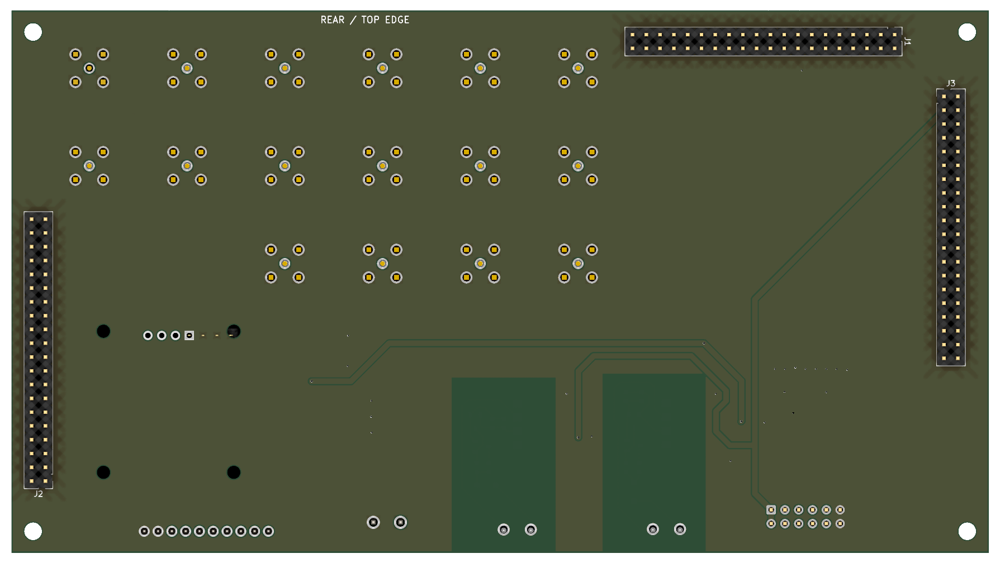
11Into the housing
Your housing is your own design, so its README is the authority; the common points:
- Print and check the test coupon first; fit an M3 screw and a nut in it.
- Anything that goes between the panel and its cover goes on before the stack enters the housing: Yi-Tsai's OLED surround sits in the cover window and goes onto the panel before the shell.
- Lower the mated stack in, rear edge to the rear wall: the USB-C, the 5 V jack and the three terminals show in the rear openings, the SMA field and the module header in the cover openings.
- Cover on, then the bottom lid; the lid's small holes sit under the terminal screws where the design has them.
- Stick-on feet taller than the lid's screw heads.
The OLED module, when it comes, plugs into J30 with its pins in the order GND VCC SCL SDA, the same as the silkscreen. Modules with VCC and GND swapped exist and would be powered backwards; read the pin names on the module before plugging it in. It is held by four M2 × 10 stand-offs or by the cover, as your design says.
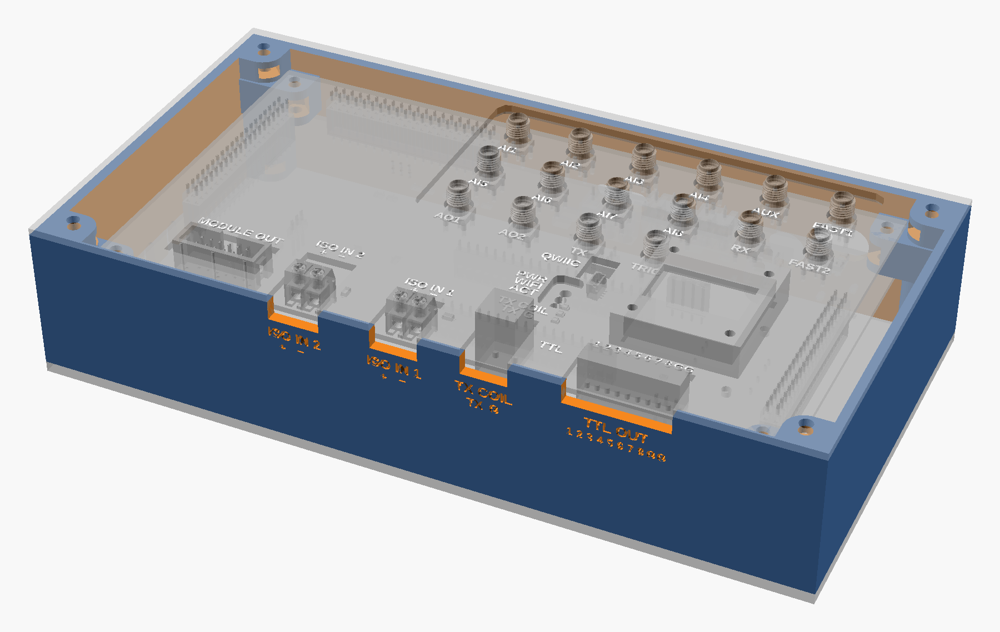
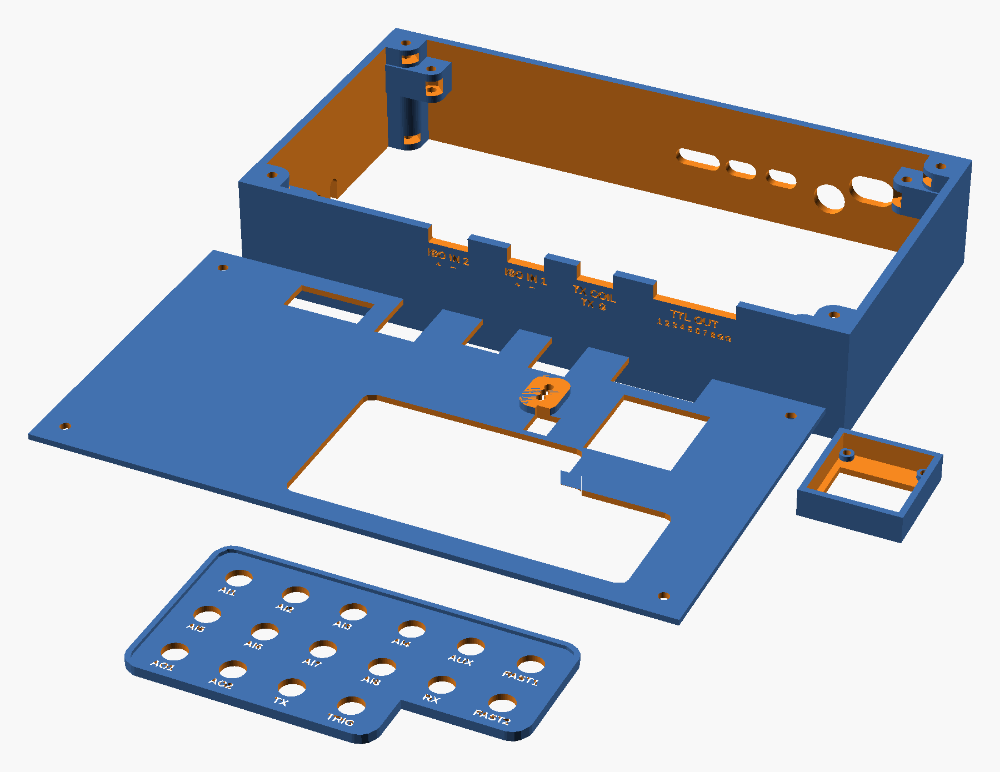